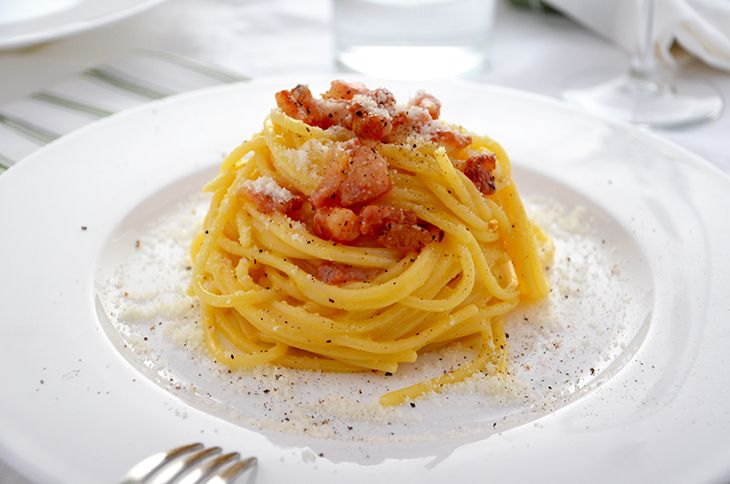

The most well known pasta dish from Rome!
Who hasn't heard of "pasta alla carbonara" at least once?
Probably the most well known and replicated pasta dish from italian cuisine, this is the perfect recipe to impress your friends or for a dinner date.
Ingredients:
- Spaghetti 320g
- Eggs 1 whole egg, 1 egg yolk per person
- Black pepper to taste
- Pork Jowl 150g, you can use pancetta or bacon if you can't find jowl
- Pecorino cheese (grated). Parmigiano works as well
Instructions:
- Place a pot of salted water on a medium-high flame. Focus on the other ingredients while it reaches boiling point
- Cut the jowl (or whatever substitute you have) into slices first and then in small (almost 1cm) thick bits. If you're using jowl make sure to take away the skin first
- Place the bits in a pan and place it on a medium flame. Careful not to burn it or the taste is going to be very overwhelming
- Once the jowl is cooked, turn off the heat and take it out of the pan. Let it sit in a small bowl. Keep the grease released from the jowl in the pan
- As soon as the water is boling, put the spaghetti in and give it a stir every once in a while to prevent sticking
- Put the whole egg and the egg yolks in a bowl. Put pepper to taste
- Put the grated pecorino cheese inside the bowl with the eggs and whisk. The quantity of the cheese should be enough once the mixture has reached an almost "doughy" consistency
- Pour some of the pasta water inside the bowl. Careful not to overdo it or it's gonna result in a very watery sauce!
- Keep whisking until the cheese has completely melted with the eggs. This and the previous steps are crucial to making a perfect Carbonara, and it serves to pasteurize the eggs!
- 2 minutes before the spaghetti are done cooking, take them out of the pot and place them in the pan where you cooked the jowl (make sure you reignited the flame under the pan)
- Add a little of the water you used to cook pasta inside the pan and keep cooking the spaghetti there, stir them frequently to release the starch in the pasta
- Once the Spaghetti are ready, turn off the heat and let them cool a little bit before adding the egg sauce and the jowl
- Stir everything together and serve! A little bit of fresh grated pepper goes a long way too!
Storage:
Don't. Spaghetti alla Carbonara is a very express recipe and should be eaten as soon as it's ready